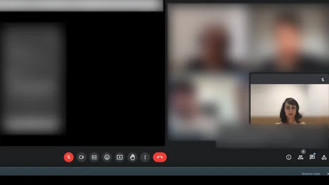
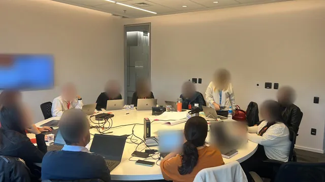

Projetos Case 02
Strategic UX Research para transformação digital
Pesquisa sobre jornadas fragmentadas de clientes, dentro de uma transformação que reuniu o autoatendimento residencial e móvel em uma única experiência.
Visão geral e desafio
Pesquisa estratégica e de UX para uma grande operadora de telecomunicações brasileira, como parte de uma transformação digital que reuniu seus apps de autoatendimento residencial e móvel em uma única experiência.
Clientes residenciais e móveis gerenciavam seus serviços em apps separados, mesmo quando eram clientes dos dois. A fragmentação também era interna: sistemas e equipes diferentes dificultavam construir uma visão única do cliente.
O cliente não deveria precisar entender como a empresa se organiza para conseguir resolver seus problemas.
A pesquisa contribuiu para reunir dois apps de autoatendimento em uma única experiência, do discovery à primeira fase de implementação.
- Setor
- Telecomunicações
- Organização
- Grande operadora de telecomunicações brasileira
- Duração do projeto
- 6 meses
- Ano
- 2023
Estratégia de pesquisa
Perguntas que a pesquisa precisava responder:
- Como clientes residenciais, móveis e com serviços combinados usam seus serviços?
- Onde as jornadas digitais atuais geram atrito?
- Como os concorrentes organizam seus serviços digitais?
- Quais clientes seriam mais afetados pela integração?
- As funcionalidades existentes e propostas funcionam para os usuários?
Uma abordagem de métodos mistos em três momentos, conduzida junto com o trabalho de integração.
-
01
Pesquisa e discovery
Entrevistas com clientes e stakeholders, questionários, análise de NPS e TNPS, pesquisa de mercado e de concorrentes e análise de jornadas. Os resultados foram sintetizados em três personas baseadas em pesquisa.
-
02
Alinhamento estratégico
As descobertas foram discutidas com UX e design, produto, tecnologia e lideranças, conectando as evidências sobre os clientes às prioridades da integração.
-
03
Acompanhamento da implementação
Testes de usabilidade moderados e não moderados continuaram à medida que novos fluxos eram propostos, até as primeiras entregas da integração.
Pesquisa na prática



- Teste de usabilidade em loja, observando clientes transitarem entre os canais físico e digital.
- Sessão moderada remota com o protótipo do login unificado, durante a implementação do app.
- Lean design e alinhamento semanal entre tecnologia e arquitetura, produto e negócio, e pesquisa e design.
Principais insights e direções de design
Clientes residenciais e móveis mostravam padrões distintos de comportamento e satisfação. Três personas tornaram essas diferenças visíveis para as equipes, incluindo clientes com serviços combinados.
Acima de tudo, a integração precisava ir além da consolidação de funcionalidades. Cada parte da experiência examinada pela pesquisa virou uma direção discutida com as equipes.
-
Parte da experiência analisada
Acesso: clientes com os dois serviços usavam dois apps separados.
Direção de design
Acesso unificado aos serviços residenciais e móveis.
-
Parte da experiência analisada
Gestão de produtos, dividida por serviço.
Direção de design
Gestão mais centralizada dos produtos.
-
Parte da experiência analisada
Contratos e faturas: os clientes precisavam de mais visibilidade sobre os serviços contratados e as informações de cobrança.
Direção de design
Contratos mais transparentes e acesso mais claro às faturas.
-
Parte da experiência analisada
Passagem entre o autoatendimento e o atendimento humano.
Direção de design
Canais de atendimento integrados, para que os atendentes acessem as informações e o histórico do cliente e resolvam os problemas com mais facilidade.
A análise de mercado e competitiva situou essas descobertas no cenário mais amplo de serviços digitais.
Impacto na transformação
Essas direções subsidiaram a integração dos dois apps de autoatendimento em um, simplificando a forma como os clientes acessavam e gerenciavam serviços residenciais e móveis. Acompanhei o projeto até as primeiras entregas da integração, dentro de uma transformação mais ampla que continuou depois do projeto.
Transformação em escala
- 2 → 1
- Apps de autoatendimento reunidos em uma única experiência
- Dezenas de milhões
- Usuários ativos por mês nos dois apps, segundo dados públicos de 2024
- 6 meses
- De pesquisa, do discovery à primeira fase de implementação
Minha contribuição
Atuei como UX Researcher ao lado do gestor de UX e design, na pesquisa e no alinhamento da integração.
Conduzi a pesquisa com clientes e stakeholders, analisei as jornadas dos serviços residenciais e móveis, desenvolvi as personas, realizei os testes de usabilidade e levei as evidências às discussões com produto, design e tecnologia. Também participei do acompanhamento semanal entre as áreas, seguindo a primeira fase da integração até as entregas.